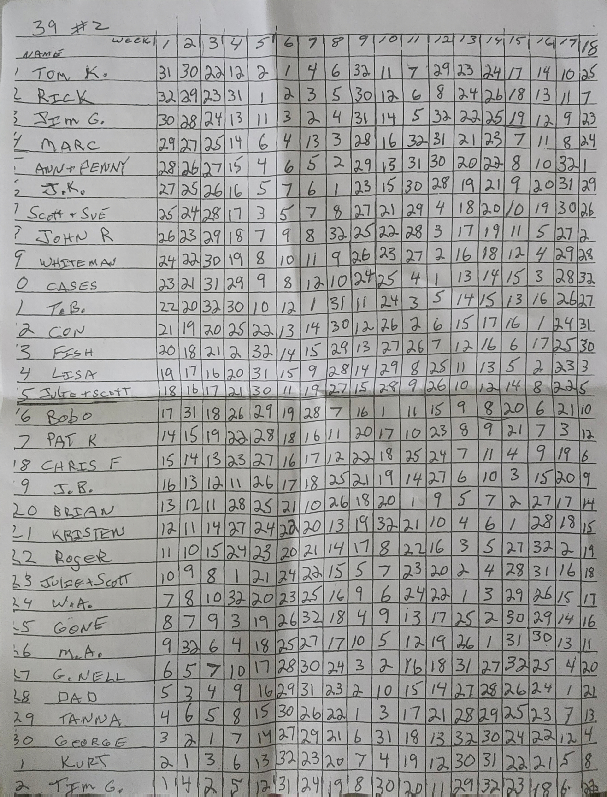
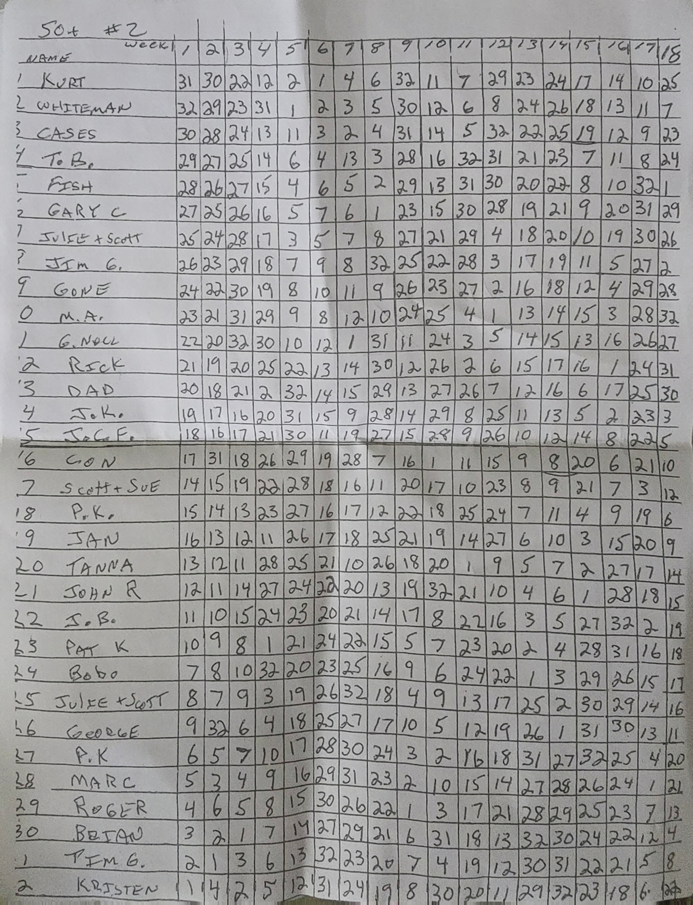
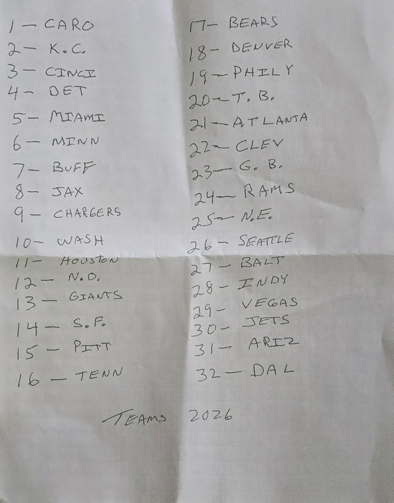

18 WEEKS. TWO WAYS TO WIN.
Your Sunday watch.
Season history
Week = schedule week · Team # = number on your pool sheet.
Original sheets · verify your picks
All three original photos are here, unchanged. Tap any photo to open it full-size and zoom in. Repeated uploads of the same photo are shown once.
39 Exact · original “39 #2” sheet
Your Tim G. row is at the bottom, row 32. Compare the week across the top with the Team # shown in the tracker.

Open 39 Exact photo full-size ↗50+ · original “50+ #2” sheet
Your Tim G. row is second from the bottom, row 31.

Open 50+ photo full-size ↗Team-number key · original sheet
Match each number in your row to a team: #4 is Detroit and #14 is San Francisco.

Open team-number key full-size ↗Readable team-number key
Install & how it works
iPhone: open the hosted link in Safari, tap Share, then Add to Home Screen. Android: use the browser’s Install app or Add to Home screen menu.
Scores refresh every 30 seconds while this app is visible. Your last retrieved scores stay available offline on this device. There are no background or lock-screen alerts.
39 Exact: a live score of 39 is highlighted; a win is confirmed at the final whistle. 50+: a live score of at least 50 is highlighted; final results confirm wins. Scores can be corrected by the provider.
Times use your phone’s time zone. Missing games are shown as unconfirmed, never assumed to be a bye. ESPN’s public feed requires no key but is unofficial and can change.